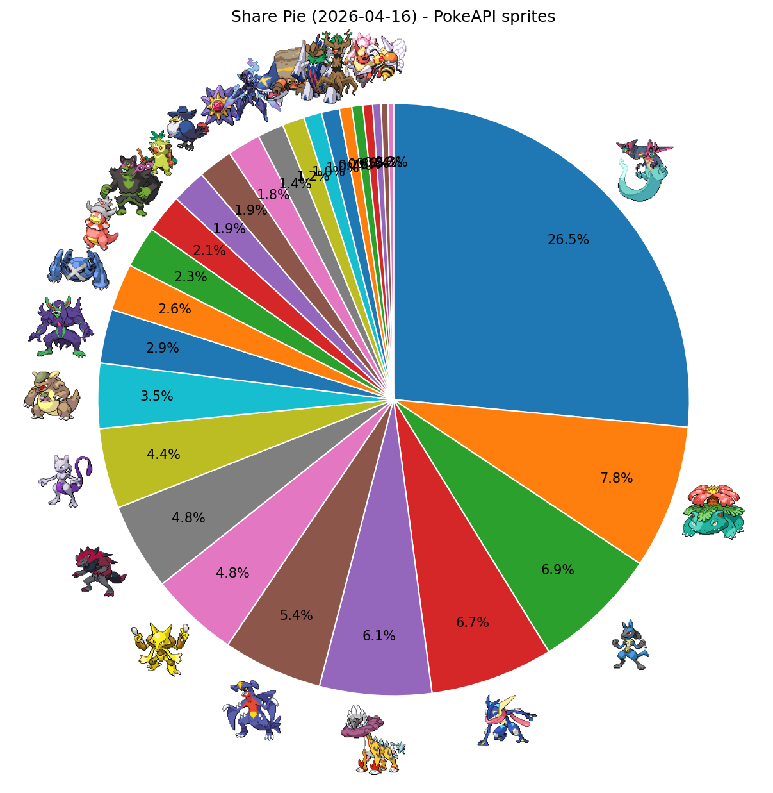
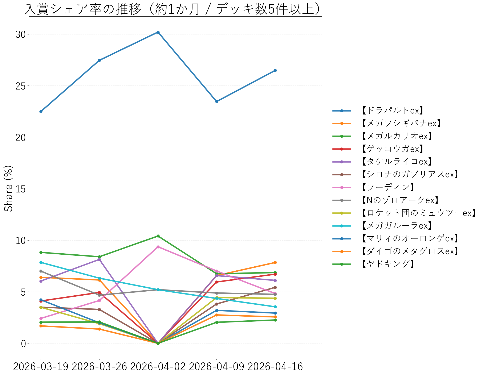

↔ 横スクロール
| 順位 | デッキタイプ | 入賞数 | シェア |
|---|---|---|---|
| 1 | 【ドラパルトex】 | 351 | 26.49% |
| 2 | 【メガフシギバナex】 | 104 | 7.85% |
| 3 | 【メガルカリオex】 | 91 | 6.87% |
| 4 | 【ゲッコウガex】 | 89 | 6.72% |
| 5 | 【タケルライコex】 | 81 | 6.11% |
| 6 | 【シロナのガブリアスex】 | 72 | 5.43% |
| 7 | 【フーディン】 | 64 | 4.83% |
| 8 | 【Nのゾロアークex】 | 63 | 4.75% |
| 9 | 【ロケット団のミュウツーex】 | 58 | 4.38% |
| 10 | 【メガガルーラex】 | 47 | 3.55% |
| 11 | 【マリィのオーロンゲex】 | 39 | 2.94% |
| 12 | 【ダイゴのメタグロスex】 | 34 | 2.57% |
| 13 | 【ヤドキング】 | 30 | 2.26% |
| 14 | 【イイネイヌ】 | 28 | 2.11% |
| 15 | 【おまつりおんど】 | 25 | 1.89% |
| 16 | 【ロケット団のドンカラス】 | 25 | 1.89% |
| 17 | 【メガスターミーex】 | 24 | 1.81% |
| 18 | 【ソウブレイズex】 | 19 | 1.43% |
| 19 | 【メガサメハダーex】 | 16 | 1.21% |
| 20 | 【イワパレス】 | 13 | 0.98% |
| 21 | 【ブリジュラスex】 | 13 | 0.98% |
| 22 | 【ホップのオーロット】 | 9 | 0.68% |
| 23 | 【メガディアンシーex】 | 7 | 0.53% |
| 24 | 【ブースターex】 | 6 | 0.45% |
| 25 | 【スピアーex】 | 5 | 0.38% |
| 26 | その他 | 12 | 0.91% |

PokeAPIアイコン付きシェア円グラフ

入賞シェア率の推移